Drivers
2026 Championship Grid — All 22 Drivers
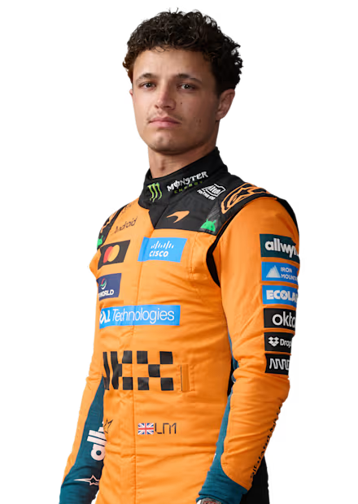
1
 Lando Norris 🏆
Lando Norris 🏆McLaren
15PTS
0Wins
0Pods
Lando Norris
Full Name: Lando Norris
Birthday: 13 Nov 1999
F1 Start: 2019
Karting: CIK-FIA World KF Champ (2014)
Team Tenure:
2019-McLaren
Fun Fact: Accidentally broke Max Verstappen's porcelain winner's trophy in Hungary with his signature champagne celebration.
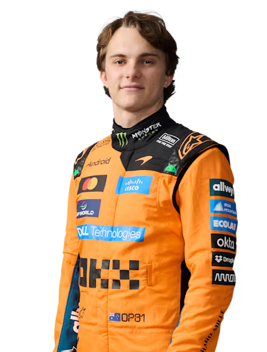
81
 Oscar Piastri
Oscar PiastriMcLaren
3PTS
0Wins
0Pods
Oscar Piastri
Full Name: Oscar Jack Piastri
Birthday: 6 Apr 2001
F1 Start: 2023
Karting: Started racing RC cars before karts
Team Tenure:
2023-McLaren
Fun Fact: His mom casually tweets at F1 teams and other drivers, often embarrassing him publicly on social media.

63
George RussellMercedes
51PTS
1Wins
2Pods
George Russell
Full Name: George William Russell
Birthday: 15 Feb 1998
F1 Start: 2019
Karting: Super One British Champ (2012)
Team Tenure:
2022-Mercedes
2019-21Williams
Fun Fact: Created a PowerPoint presentation as a teenager to convince Toto Wolff to sign him to Mercedes.

12
 Kimi Antonelli
Kimi AntonelliMercedes
47PTS
1Wins
2Pods
Kimi Antonelli
Full Name: Andrea Kimi Antonelli
Birthday: 25 Aug 2006
F1 Start: 2025
Karting: Two-time Euro Karting Champ
Team Tenure:
2025-Mercedes
Fun Fact: Bypassed F3 completely, moving straight from Formula Regional to F2, a very rare feat in modern F1.
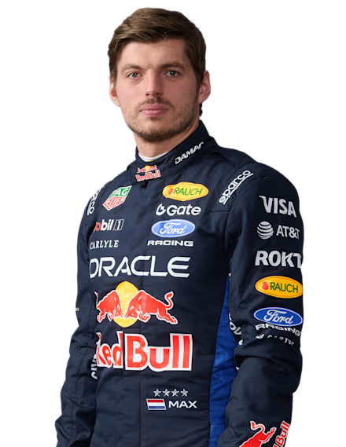
3
 Max Verstappen
Max VerstappenRed Bull Racing
8PTS
0Wins
0Pods
Max Verstappen
Full Name: Max Emilian Verstappen
Birthday: 30 Sep 1997
F1 Start: 2015
Karting: World KZ Champion (2013)
Team Tenure:
2016-Red Bull
2015-16Toro Rosso
Fun Fact: Occasionally dominates online sim racing lobbies using his infamous alter ego, "Franz Hermann."
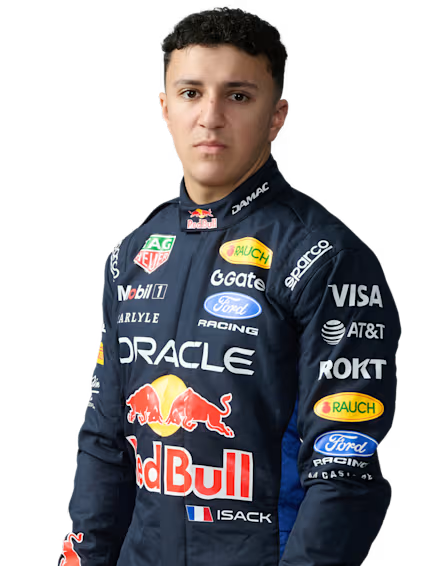
22
 Isack Hadjar
Isack HadjarRed Bull Racing
4PTS
0Wins
0Pods
Isack Hadjar
Full Name: Isack Hadjar
Birthday: 28 Sep 2004
F1 Start: 2025
Karting: French Junior Karting Champ
Team Tenure:
2026-Red Bull
Fun Fact: Is a huge fan of vintage F1 cars and often visits classic car museums in his spare time.

16
 Charles Leclerc
Charles LeclercScuderia Ferrari
34PTS
0Wins
1Pods
Charles Leclerc
Full Name: Charles Marc Hervé Perceval Leclerc
Birthday: 16 Oct 1997
F1 Start: 2018
Karting: WSK Euro Series Champ (2012)
Team Tenure:
2019-Ferrari
2018Sauber
Fun Fact: Composes and releases his own classical piano music on streaming platforms in his free time.
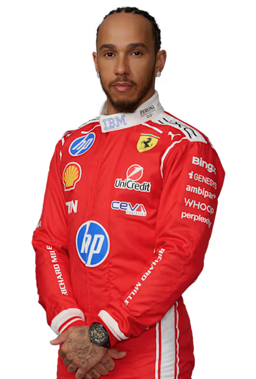
44
Lewis HamiltonScuderia Ferrari
33PTS
0Wins
1Pods
Lewis Hamilton
Full Name: Sir Lewis Carl Davidson Hamilton
Birthday: 7 Jan 1985
F1 Start: 2007
Karting: Euro Formula A Champ (2000)
Team Tenure:
2025-Ferrari
2013-24Mercedes
2007-12McLaren
Fun Fact: Has an irrational fear of onions and completely avoids them.
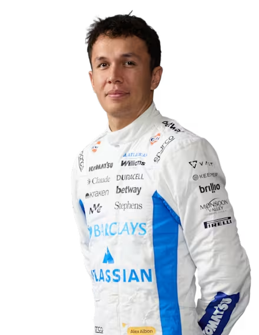
23
 Alexander Albon
Alexander AlbonWilliams Racing
0PTS
0Wins
0Pods
Alexander Albon
Full Name: Alexander Albon Ansusinha
Birthday: 23 Mar 1996
F1 Start: 2019
Karting: CIK-FIA World Cup Champ (2010)
Team Tenure:
2022-Williams
2019-20Red Bull
2019Toro Rosso
Fun Fact: Co-owns a squad of pampered pets with his girlfriend, including multiple cats and a horse.
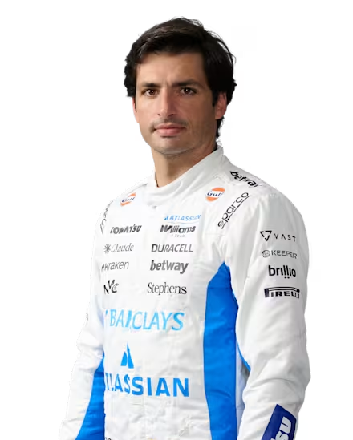
55
 Carlos Sainz
Carlos SainzWilliams Racing
2PTS
0Wins
0Pods
Carlos Sainz
Full Name: Carlos Sainz Vázquez de Castro Cenamor Rincón Rebollo Virto Pérez de Rozas y Ruiz de Torrejón
Birthday: 1 Sep 1994
F1 Start: 2015
Karting: CIK-FIA Asia-Pacific Champ (2008)
Team Tenure:
2025-Williams
2021-24Ferrari
2019-20McLaren
2017-18Renault
2015-17Toro Rosso
Fun Fact: His full legal name takes quite a while to read: Carlos Sainz Vázquez de Castro Cenamor Rincón Rebollo Virto Pérez de Rozas y Ruiz de Torrejón.
30
 Liam Lawson
Liam LawsonRacing Bulls
8PTS
0Wins
0Pods
Liam Lawson
Full Name: Liam Lawson
Birthday: 11 Feb 2002
F1 Start: 2023
Karting: NZ karting started at age 7
Team Tenure:
2024-Racing Bulls
2023AlphaTauri
Fun Fact: Started out racing go-karts in New Zealand and promised his parents at a young age he'd make it to F1.
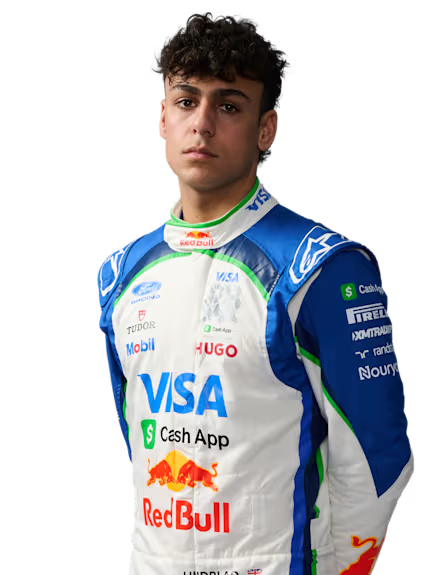
41
Arvid Lindblad 🆕Racing Bulls
4PTS
0Wins
0Pods
Arvid Lindblad
Full Name: Arvid Lindblad
Birthday: 8 Aug 2007
F1 Start: 2026
Karting: WSK Super Master Champ
Team Tenure:
2026-Racing Bulls
Fun Fact: Was signed to the prestigious Red Bull Junior Team when he was just 14 years old.
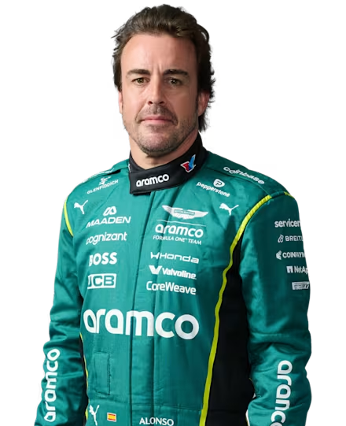
14
Fernando AlonsoAston Martin
0PTS
0Wins
0Pods
Fernando Alonso
Full Name: Fernando Alonso Díaz
Birthday: 29 Jul 1981
F1 Start: 2001
Karting: Junior Karting World Cup (1996)
Team Tenure:
2023-Aston Martin
2021-22Alpine
2015-18McLaren
2010-14Ferrari
2008-09Renault
2007McLaren
2003-06Renault
2001Minardi
Fun Fact: Enjoys performing magic tricks with playing cards to entertain his team members during rain delays.
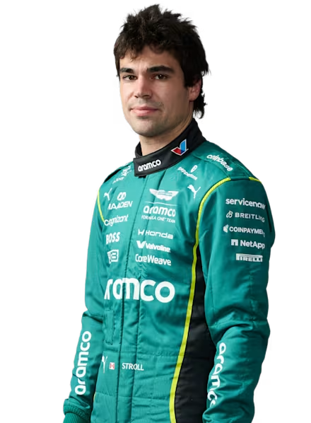
18
 Lance Stroll
Lance StrollAston Martin
0PTS
0Wins
0Pods
Lance Stroll
Full Name: Lance Strulovitch
Birthday: 29 Oct 1998
F1 Start: 2017
Karting: Canadian National Champ
Team Tenure:
2021-Aston Martin
2019-20Racing Point
2017-18Williams
Fun Fact: Has a deep passion for Canadian maple syrup and is known to bring it to the paddock for his team.
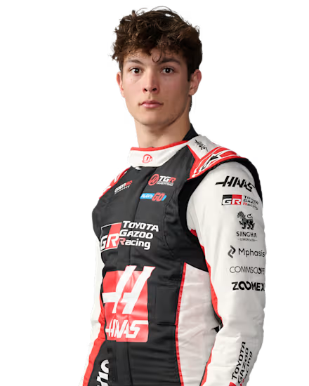
87
Oliver BearmanTGR Haas F1
17PTS
0Wins
0Pods
Oliver Bearman
Full Name: Oliver Bearman
Birthday: 8 May 2005
F1 Start: 2024
Karting: IAME International Final Champ
Team Tenure:
2025-Haas
2024Ferrari
Fun Fact: Made his unexpected F1 debut at the Saudi Arabian GP on just hours' notice, scoring points as a teenager.
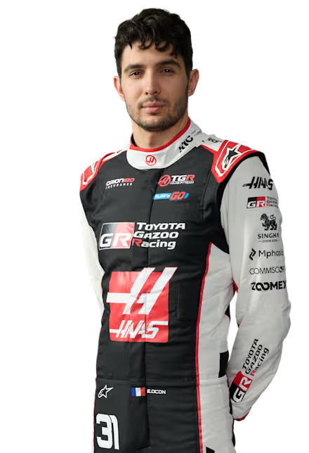
31
Esteban OconTGR Haas F1
0PTS
0Wins
0Pods
Esteban Ocon
Full Name: Esteban José Jean-Pierre Ocon-Khelfane
Birthday: 17 Sep 1996
F1 Start: 2016
Karting: French Minime Champ (2007)
Team Tenure:
2025-Haas
2020-24Alpine/Renault
2017-18Force India
2016Manor
Fun Fact: His family lived in a caravan and traveled from race to race to fund his early karting career.
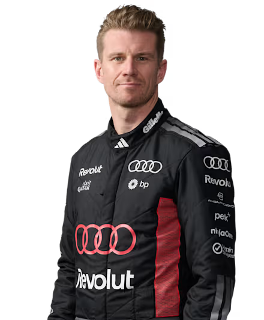
27
 Nico Hülkenberg
Nico HülkenbergAudi F1 🆕
0PTS
0Wins
0Pods
Nico Hülkenberg
Full Name: Nicolas Hülkenberg
Birthday: 19 Aug 1987
F1 Start: 2010
Karting: German Junior Karting Champ
Team Tenure:
2025-Audi
2023-24Haas
2020-22Aston/Racing Point
2017-19Renault
2014-16Force India
2013Sauber
2011-12Force India
2010Williams
Fun Fact: Won the grueling 24 Hours of Le Mans in 2015 on his very first attempt while still actively racing in F1.
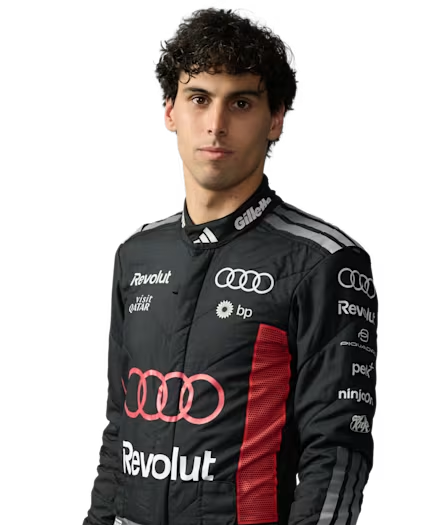
5
 Gabriel Bortoleto
Gabriel BortoletoAudi F1 🆕
2PTS
0Wins
0Pods
Gabriel Bortoleto
Full Name: Gabriel Bortoleto
Birthday: 14 Oct 2004
F1 Start: 2025
Karting: Brazilian National Champ
Team Tenure:
2025-Audi
Fun Fact: Won the FIA Formula 3 Championship in his rookie year in 2023.
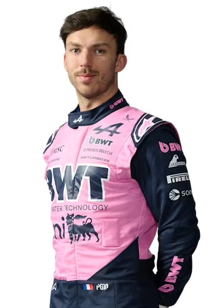
10
Pierre GaslyAlpine
9PTS
0Wins
0Pods
Pierre Gasly
Full Name: Pierre Jean-Jacques Gasly
Birthday: 7 Feb 1996
F1 Start: 2017
Karting: French Minime Vice-Champ (2006)
Team Tenure:
2023-Alpine
2020-22AlphaTauri
2019Red Bull
2017-18Toro Rosso
Fun Fact: Is extremely passionate about football and enthusiastically supports Paris Saint-Germain (PSG).
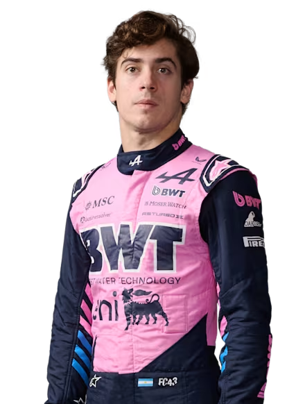
43
 Franco Colapinto
Franco ColapintoAlpine
1PTS
0Wins
0Pods
Franco Colapinto
Full Name: Franco Alejandro Colapinto
Birthday: 27 May 2003
F1 Start: 2024
Karting: Youth Summer Olympics Gold
Team Tenure:
2026-Alpine
2024-25Williams
Fun Fact: Often shares traditional Argentine mate tea with his mechanics and other drivers in the paddock.
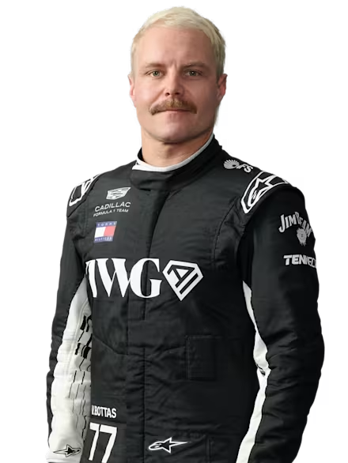
77
 Valtteri Bottas
Valtteri BottasCadillac F1 🆕
0PTS
0Wins
0Pods
Valtteri Bottas
Full Name: Valtteri Viktor Bottas
Birthday: 28 Aug 1989
F1 Start: 2013
Karting: WSK International Champ (2008)
Team Tenure:
2026-Cadillac
2022-25Alfa Romeo/Sauber
2017-21Mercedes
2013-16Williams
Fun Fact: Is an avid cyclist and co-owns a successful coffee roastery in Finland.
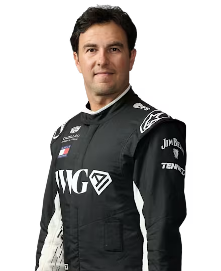
11
 Sergio Pérez
Sergio PérezCadillac F1 🆕
0PTS
0Wins
0Pods
Sergio Pérez
Full Name: Sergio Michel Pérez Mendoza
Birthday: 26 Jan 1990
F1 Start: 2011
Karting: Mexican Shifter 125cc Champ
Team Tenure:
2026-Cadillac
2021-25Red Bull
2014-20Force India/RP
2013McLaren
2011-12Sauber
Fun Fact: Earned the nickname 'Minister of Defence' for his incredible defensive driving at the 2021 Abu Dhabi GP.